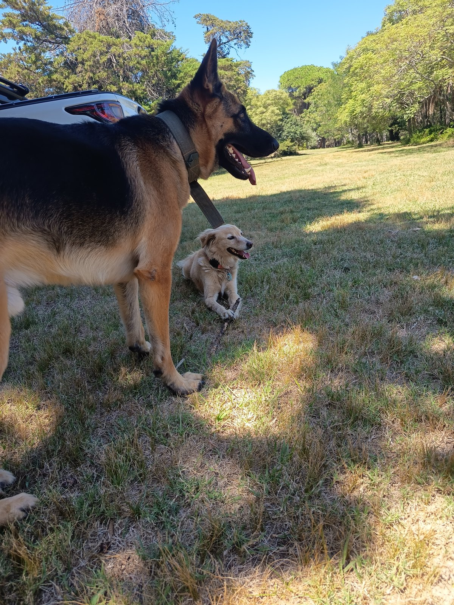
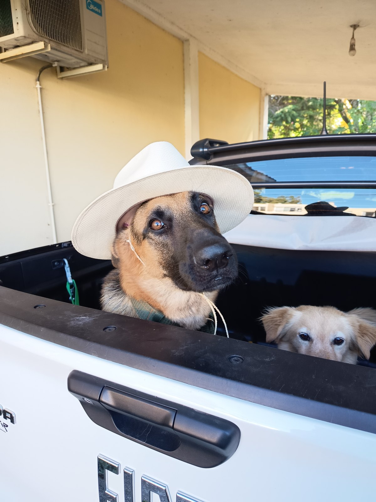
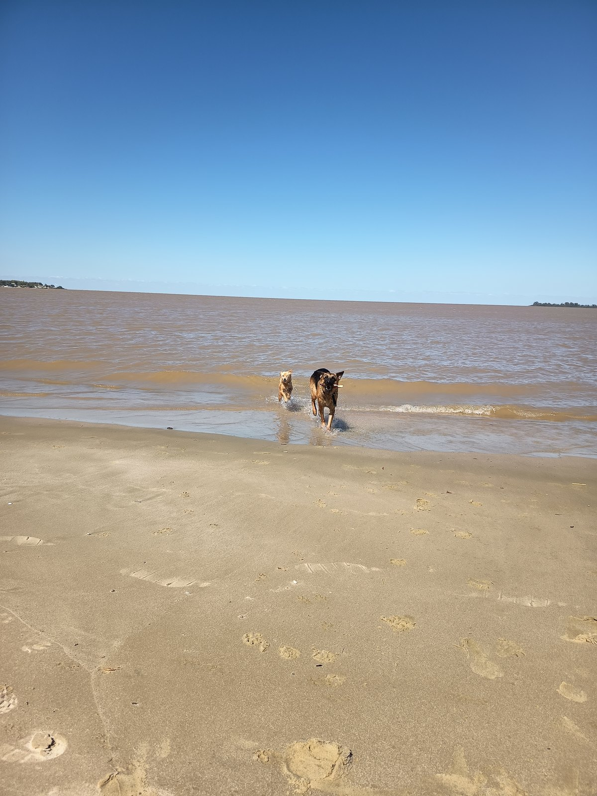

🐾🐶 Walk with Lupa & Jack – Experience Colonia Like a Local
🛡️ Medical assistance included (SIMC)
We love animals and know how hard it can be to be away from them. Join us for a relaxing walk through Colonia and enjoy traditional tortas fritas or churros along the way.